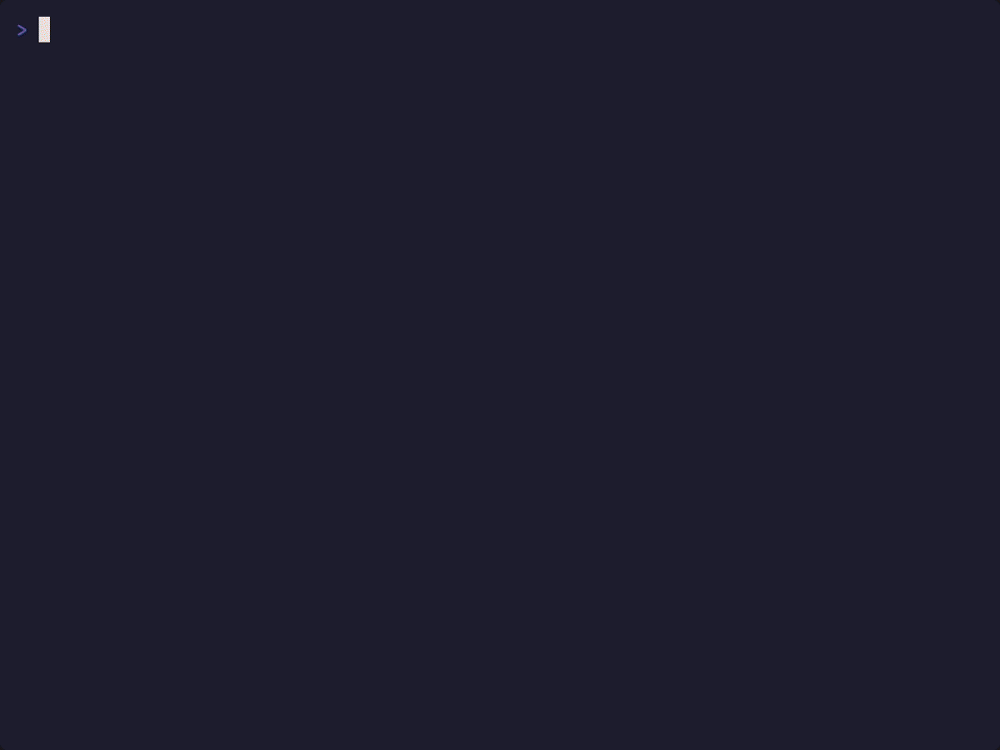

Interactive terminal UI
Move through blocks, search the document, run the selected block, view output, paste into processes, and switch themes.
Run code blocks directly from Markdown in a terminal UI or an automation-friendly CLI.
macOS · Linux · Windows · x86_64 · ARM64
$ curl --proto '=https' --tlsv1.2 -LsSf https://github.com/rezigned/upmd/releases/latest/download/upmd-installer.sh | sh

Select a markdown code block, run it, then keep the result inline.
Keep setup steps, experiments, deployment commands, and debugging notes in one markdown file. upmd parses fenced code blocks, chooses the right runner, streams output inline, and can carry state between blocks.
Move through blocks, search the document, run the selected block, view output, paste into processes, and switch themes.
Run all blocks in CI with upmd --cli --all --yes README.md, or jump to a named block with --block.
Interactive prompts, pagers, editors, colors, and ANSI output behave like they do in your terminal.
Shell blocks keep exported variables and working-directory changes for later blocks. Non-shell blocks can opt in.
Bash, sh, zsh, fish, Python, JavaScript, TypeScript, Ruby, PHP, Go, Rust, C, Zig, Cmd, and PowerShell.
No notebook format. No front matter. Add optional code block attributes only when you need names or binary overrides.
Use it for examples, runbooks, release checklists, repro scripts, local ops, and docs that should prove they still work.
# Open a markdown file in the TUI
upmd README.md
# Run every block headlessly
upmd --cli --all --yes README.md
# Jump to one named block
upmd deploy.md --block setup --yes
✓ Python block 4 passed
✓ Ruby block 5 streamed outputInstall upmd, open a markdown file, and run the code blocks exactly where they are documented.